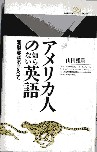

「アメリカ人の知らない英語」という本を読んだ。いや、面白かった。

和製英語の種類も、
（１）ナイターとかウインカーなどという、日本製の新単語。
（２）ライフラインとかデッドボール、テールランプなどのように、既存の単語を組み合わせたもの。
（３）リストラ（リストラクチャニング)とかインフラ（インフラストラクチャー）、あるいはゼネコン（ゼネラルコンダクター）、ワープロ（ワードプロセッサ）のように長い単語や熟語を短縮したもの。
（４）マンション（豪邸→集合住宅(笑)）、ペーパーテスト(紙質検査→筆記試験)、シルバー（銀→老人）、モーニングサービス（朝の礼拝→ゆで卵とトーストのサービス）、アメリカン（USA→薄い(-_-；）のように、本来とは異なる意味で用いられる。
など多種多様。しかしなんといっても中心は（２）。
それでもコラムタイトルを和製洋語としたのは、テーマソング(独＋英)とかアクアライン(ラ＋英)、シュークリーム（仏＋英）など、英語以外の組み合わせもいっぱいあるから。しかしなんと云っても中心は英語。
それがなんとまぁ、こんなにすごいとは。じっさいどの表現が和製洋語かと考えるより、メディアで使われているカタカナ語は、すべて和製洋語と思った方がいいくらい。
災害時、新聞に「ライフラインの復旧が」なんて記事が載るが、これが和製洋語とは知らなんだ。最近新聞で見かけるグローバルスタンダード(国際標準)とかユニバーサルデザイン(国際的意匠)。なにがグローバルスタンダードだ、なにがユニバーサルデザインだ。日本でしか通用せんとは知らなんだ。(-_-)
しかし漢字だって、もともとは中国語。そこから辻とか峠など、日本独自の漢字もうまれている（いちおう国字という)。経済とか電柱とか一方通行とか新しい表現もうまれた。だとしたらソープランドにしてもコーヒーショップにしても、立派な日本語。
“アメリカ人の知らない英語”じゃなくって、そもそも日本語がガイジンに理解できるわけがねぇ....
|